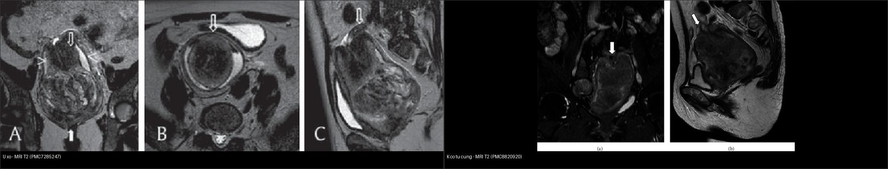
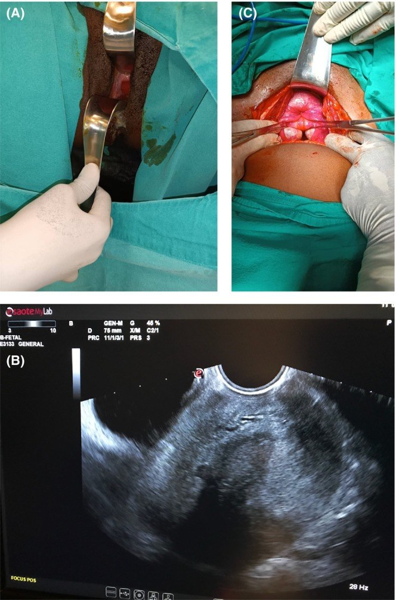
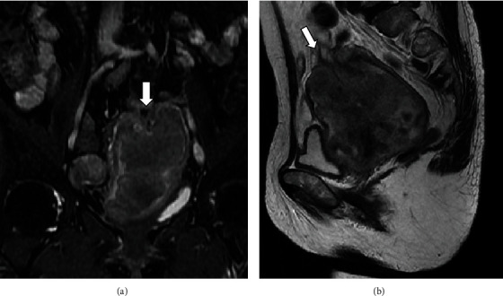
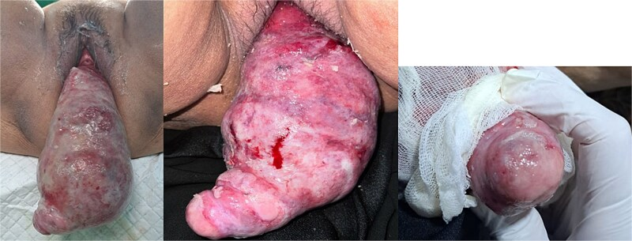

544 — Đảo ngược tử cung KHÔNG do sinh (nonpuerperal uterine inversion, NPUI) & khối sa qua cổ tử cung / Nonpuerperal uterine inversion — the inside-out uterus
Tags: pattern:dao-nguoc-tu-cung pattern:khoi-sa-qua-co-tu-cung vung:tu-cung vung:am-dao protocol:MRI-tieu-khung protocol:sieu-am-dau-do
Mức chắc chắn (certainty): tổng hợp y văn (literature synthesis) — nhóm tự biên từ tổng quan 153 ca của Herath 2020 (PMC7285247, CC BY) + các ca nguyên văn có ảnh CC BY (PMC8820920, PMC11305835, PMC12527823, PMC12433716); số liệu đối chiếu từng bài gốc.
1. Tổng quan bệnh học – cơ chế hình ảnh
- Định nghĩa: đảo ngược tử cung (uterine inversion) là tình trạng đáy tử cung lộn ngược vào trong rồi sa qua vòng cổ tử cung, có thể lộ ra ngoài âm hộ. Jones (1951) chia hai loại: do sinh (puerperal/obstetric) và không do sinh (nonpuerperal/gynaecological) (Herath 2020). NPUI chiếm ~16% toàn bộ ca đảo ngược tử cung (Kurniawan 2025) — hiếm nhưng không được bỏ sót vì ca mãn tính dễ bị cắt nhầm "khối âm đạo" gây thủng phúc mạc.
- Dịch tễ (tổng quan 153 ca, Herath 2020, PMC7285247): tuổi trung bình 46,3 tuổi (SD 18; khoảng 14–88). Nguyên nhân: u xơ cơ tử cung (leiomyoma) 56,2%, ung thư biểu mô 8,5%, sarcoma 8,5%, u Müllerian hỗn hợp 6,5%, nguyên nhân hiếm khác 11,1%, vô căn 9,2%. Tính chung 32,0% là ác tính — con số quyết định việc luôn lấy mô bệnh trước khi can thiệp triệt để. Trong 303 ca tích lũy từ 1911, u xơ chiếm 69,5%.
- Vì sao đảo ngược (cơ chế): khối trong lòng tử cung làm cơ tử cung bị giãn căng → kích thích co bóp tống xuất → giãn cổ tử cung → khối bị đẩy ra, kéo theo đáy tử cung (Herath 2020). Yếu tố góp phần: trọng lượng khối, lực kéo thủ công, tăng áp lực trong ổ bụng (ho, rặn). Với sarcoma, vùng thành tử cung bị u làm yếu → lồi vào lòng → chịu ảnh hưởng cơ co bóp rồi lộn ra ngoài. Yếu tố nguy cơ: khối trong lòng tử cung (u xơ dưới niêm mạc, sarcoma), u ở đáy, thành tử cung mỏng, cổ tử cung giãn (Kurniawan 2025).
- TẠI SAO hình ảnh trông như vậy (vật lý + mô bệnh):
- Hình thể lộn ngược: buồng tử cung (nội mạc) trở thành bề mặt ngoài của khối. Vì vậy khi mô bệnh/soi thấy nội mạc trên bề mặt khối là bằng chứng chốt của đảo ngược (Herath 2020).
- Siêu âm đường dọc: buồng tử cung hình chữ Y ở đảo ngược không hoàn toàn (đáy chữ Y = nội mạc chưa lộn) và hình chữ U ở đảo ngược hoàn toàn (hai nhánh chữ U = nội mạc đã lộn, chạy ra trước và sau). Trên mặt cắt ngang thấy dấu bia bắn (target sign): đáy tử cung tăng âm được viền bởi lớp dịch giữa đáy lộn ngược và thành âm đạo.
- 3D power Doppler: hai động mạch tử cung chạy DỌC TRUNG TÂM dọc thân tử cung với dấu "U-turn", thay vì vị trí ngoại vi hai bên như bình thường (Herath 2020) — dấu hiệu giải phẫu mạch máu rất đặc hiệu.
- MRI: nhạy nhất. Buồng tử cung chữ U, đáy tử cung dày lộn ngược trên mặt cắt dọc, cấu hình "mắt bò" (bull's eye) trên mặt cắt ngang; trong đảo ngược hoàn toàn thấy dây chằng tròn và vòi trứng chạy vào trung tâm từ đỉnh tử cung. Nếu do ác tính, MRI giúp đánh giá xâm lấn và hạch.
- CT: ít giá trị; ở bệnh nhân mãn kinh dễ bị chẩn đoán nhầm thành ung thư cổ tử cung; dấu gợi ý là không thấy tử cung ở vị trí bình thường + khối tỷ trọng thấp giữa tiểu khung (nội mạc/cơ phù nề).
- Phân độ (Table 2, Herath 2020):
- Độ 1: đảo ngược trong còn trong buồng tử cung/không hoàn toàn (đáy vẫn trong buồng).
- Độ 2: đáy lộn hoàn toàn qua vòng cơ cổ tử cung.
- Độ 3: đảo ngược toàn bộ — đáy lộ ra ngoài âm hộ.
- Độ 4: cả âm đạo cùng tham gia lộn ra ngoài âm hộ.
- Định lượng cần nhớ: tuổi trung bình 46,3; u xơ 56,2%; ác tính 32,0%; Haultain thành công 18,0% (cao nhất); 51,9% không thay thế được/không thử.
2. Mẫu hình + chẩn đoán phân biệt theo vị trí (gamut)
- Ba câu hỏi gỡ rối mọi "khối sa qua cổ tử cung":
- Có thấy CỔ TỬ CUNG không? (sa tử cung: thấy cổ ở đỉnh; đảo ngược: KHÔNG thấy cổ, không tìm được lỗ cổ và không luồn được que vào buồng tử cung).
- Bề mặt khối là nội mạc hay niêm mạc âm đạo? (nội mạc trên bề mặt = đảo ngược; đôi khi thấy lỗ vòi trứng ở đỉnh khối = chốt).
- Nguyên nhân bên trong là gì? (u xơ trong lòng vs sarcoma/ung thư/carcinosarcoma — vì 32% ác tính).
- Gamut theo bản chất khối gây đảo ngược:
- Lành: u xơ cơ tử cung dưới niêm mạc (56,2%) — kể cả u xơ mạch máu (angiomatous leiomyoma) có thoái hóa nang; u xơ tuyến (adenofibroma); polyp nội mạc.
- Ác: sarcoma tử cung (8,5%), ung thư biểu mô (8,5% — trong đó đã có ca do ung thư cổ tử cung xâm lấn thân), u Müllerian hỗn hợp/carcinosarcoma (6,5%), rhabdomyosarcoma, di căn.
- Khác: u quái non, vô căn 9,2%.
- Gamut "khối sa qua cổ tử cung" (chẩn đoán phân biệt trên lâm sàng/hình ảnh):
- Đảo ngược tử cung không do sinh (bài này).
- Sa tử cung/âm đạo (uterine/ vaginal prolapse) — có cổ tử cung ở đỉnh.
- Polyp cổ tử cung/âm đạo, u xơ có cuống sa ra — có cuống nối vào cổ, còn thấy cổ.
- Khối ác tính hoại tử sa lộ (ung thư cổ tử cung/âm đạo hoại tử, sarcoma) — bề mặt loét mủn, mùi hôi.
- Nang Nabothian khổng lồ, sa niệu đạo (urethral prolapse) — vị trí và bề mặt khác.
- Đảo ngược DO SINH (puerperal) — sau đẻ/sẩy, cấp tính, chảy máu ồ ạt; đây là cấp cứu sản khoa, khác hẳn về bối cảnh và xử trí.
- Dấu hiệu chốt then chốt:
- Thấy lỗ vòi trứng ở đỉnh khối = chẩn đoán xác định đảo ngược.
- "Flower vase appearance" (dấu lọ hoa): buồng trứng và vòi trứng chạy vào trung tâm từ đáy tử cung đã lõm — thấy trên nội soi/CT/MRI.
- Không luồn được thăm dò vào buồng tử cung + thăm trực tràng thấy tử cung không ở vị trí bình thường, đáy lõm (Lascarides 1968).
3. Bảng so sánh phân biệt (ma trận đối chiếu)
| Thực thể (entity) | Hình ảnh điển hình | Chốt vào (rule-in) | Chốt loại (rule-out) | Gợi ý xác nhận |
|---|---|---|---|---|
| NPUI (bài này) | Siêu âm: buồng chữ U (hoàn toàn)/chữ Y (không hoàn toàn); MRI: đáy lộn ngược dày + "mắt bò", vòi/dây chằng tròn chạy vào trung tâm | Không thấy cổ tử cung + buồng chữ U + vòi–dây chằng tròn hướng tâm (+ lỗ vòi trứng ở đỉnh) | Thấy cổ tử cung ở đỉnh khối, có cuống nối cổ → sa/polyp | MRI tiểu khung T2 ± nội soi/laparoscopy; mô bệnh để loại ác tính |
| Sa tử cung – âm đạo | Khối sa nhưng thấy cổ tử cung ở đỉnh, niêm mạc âm đạo bề mặt; POP‑Q dương | Cổ tử cung hiện diện ở đỉnh + luồn được que vào buồng | Không có cổ tử cung, buồng chữ U → đảo ngược | Khám, POP‑Q; MRI nếu cần |
| Polyp/u xơ có cuống sa ra | Khối có cuống nối vào cổ/đáy tử cung, cổ tử cung vẫn nhận diện được | Cuống + cổ tử cung bình thường + cổ thấy được | Buồng chữ U, không cổ → đảo ngược | Soi/ cắt polyp + mô bệnh |
| Khối ác tính hoại tử sa lộ | Bề mặt loét mủn, hoại tử, chảy dịch hôi; CT/MRI có xâm lấn | Xâm lấn mô lân cận + mô bệnh ác tính | Bờ khối là nội mạc nguyên vẹn → nghĩ đảo ngược lành | Sinh thiết; MRI phân giai đoạn |
| Đảo ngược DO SINH (puerperal) | Sau đẻ/sẩy; khối lộn ngược cấp; chảy máu ồ ạt | Bối cảnh ngay sau sinh + sốc mất máu | Không liên quan thai kỳ → không do sinh | Cấp cứu sản khoa: xử trí thủ thuật/thuốc ngay |
| Vô căn/adenofibroma/polyp | Giống đảo ngược nhưng không thấy khối u trong buồng | Không khối trong buồng + bệnh sử | Có khối đặc lớn trong buồng → nghĩ u xơ/sarcoma | Khám dưới gây mê + mô bệnh |

Trái: đảo ngược do u xơ — đáy tử cung lộn ngược, buồng chữ U, vòi/dây chằng tròn hướng tâm. Phải: đảo ngược do ung thư cổ tử cung xâm lấn thân — cùng dạng buồng chữ U nhưng khối chủ yếu là mô u. Cùng chuỗi xung MRI T2. Nguồn: Herath RP et al., Obstet Gynecol Int 2020 (PMC7285247) + Hiratsuka D et al., Case Rep Obstet Gynecol 2022 (PMC8820920), CC BY. Ảnh ghép letterbox, giữ nguyên tỷ lệ.Dấu hiệu chốt then chốt (đọc chuẩn xác)
- Siêu âm là đầu tay nhưng phụ thuộc người làm và kém giá trị khi khối lớn lộ ra ngoài — nhiều ca trong y văn bỏ sót trên siêu âm (Herath 2020).
- MRI là chốt chẩn đoán khi lâm sàng/siêu âm mơ hồ: buồng chữ U + đáy dày lộn ngược + "mắt bò"; thấy vòi/dây chằng tròn hướng tâm càng vững chắc.
- Luôn lấy mô bệnh trước khi can thiệp triệt để: 32% là ác tính, và mở thành tử cung có u ác sẽ làm phúc mạc nhiễm bệnh.
4. Protocol chụp + phân độ/điểm chuẩn hóa
- Siêu âm đầu tay (transvaginal/transabdominal) + Doppler màu/3D power Doppler:
- Tìm buồng chữ Y (không hoàn toàn) vs chữ U (hoàn toàn), dấu bia bắn ở tiểu khung dưới.
- 3D power Doppler: hai động mạch tử cung chạy dọc trung tâm + dấu U-turn — khác vị trí ngoại vi bình thường.
- Đánh giá tính chất khối gây đảo ngược: u xơ (giảm âm, bờ rõ, bóng lưng) vs nghi ác (khối lớn không đồng nhất, tăng sinh mạch trung tâm, có ổ nang, không bóng lưng).
- MRI tiểu khung (khi siêu âm/khám không chắc hoặc nghi ác): T2W ≥ 2 bình diện (dọc + ngang, ± coronal), T1W (± fat-sat), DWI/ADC, T1W + Gd fat-sat. Đích cần mô tả: buồng chữ U/Y, đáy lộn ngược dày, "mắt bò", vòi–dây chằng tròn hướng tâm, khối trong buồng, xâm lấn cơ/chu cung, hạch.
- CT khi không có MRI: dấu gợi ý mất tử cung ở vị trí thường + khối tỷ trọng thấp giữa tiểu khung; cảnh giác chẩn đoán nhầm "ung thư cổ tử cung" ở người mãn kinh.
- Khám dưới gây mê + soi/laparoscopy + sinh thiết: xác nhận (nội mạc trên bề mặt; lỗ vòi trứng ở đỉnh; "flower vase") và lấy mô bệnh loại ác tính trước mổ triệt để.
- Kỹ thuật thay thế tử cung (dùng lại từ đảo ngược do sinh) & tỷ lệ thành công (Herath 2020, n = 133):
- Haultain (rạch vòng thắt mặt sau rồi kéo): thành công 18,0% — cao nhất.
- Huntington (mở bụng, nong vòng cổ bằng tay, kéo nhẹ dây chằng tròn/đáy lên): 0,8% — kém thành công ở NPUI.
- Spinelli (rạch mặt trước sau khi đẩy bàng quang lên): 0,8%. Kustner (mở túi Douglas qua rạch âm đạo sau + rạch thành sau tử cung): 6%.
- Không thay thế được/không thử: 51,9% → thường phải cắt tử cung.
- Đường mổ & kết cục (n = 133): mở bụng 48,8%, âm đạo 18,0%, phối hợp 27,1%, nội soi 6%. Kết cục: cắt tử cung toàn phần/bán phần 39,8%; giảm khối qua âm đạo + cắt tử cung đường bụng 15,8%; cắt tử cung đường âm đạo 19,6%; cắt tử cung triệt căn + nạo hạch 6,8%; sửa chữa sau khi thay thế được tử cung 15,0%.
- Lưu ý thực hành: GnRH analogue trước can thiệp có thể làm việc thay thế tử cung KHÓ hơn (cổ tử cung khó giãn), dù làm u nhỏ đi — cần cân nhắc.
flowchart TD
A[Khoi sa qua co tu cung<br/>khong lien quan thai ky] --> B{Thay co tu cung o dinh khoi?<br/>Luon duoc que vao buong?}
B -->|Co| C[Sa tu cung/am dao, polyp, u xo cuong: danh gia rieng]
B -->|Khong| D[Nghi DAO NGUOC TU CUNG: sieu am cheo U/Y + MRI T2]
D --> E{Loai tru ac tinh: mo benh/soi + MRI phan giai doan}
E -->|Ac tinh| F[Phau thuat triet de theo da mo<br/>+ da chuyen khoa]
E -->|Lanh| G{Giu tu cung?}
G -->|Co, mong con| H["Thu thay the: Haultain uu tien<br/>(Huntington/Spinelli/Kustner tuy the)"]
G -->|Khong| I[Cat tu cung: duong bung/am dao/phoi hop]
H --> J{Thay the duoc?}
J -->|Co| K[Cat khoi nguyen nhan + sua chua tu cung]
J -->|Khong| I
I --> L[Theo doi hau phau, kiem tra mo benh]
5. Biến thể bình thường và cạm bẫy
- Cạm bẫy chết người — "cắt khối âm đạo": ca mãn tính bị bỏ sót, thầy thuốc cắt "khối âm đạo" → đứt đáy tử cung khỏi thân và vào nhầm ổ phúc mạc (Herath 2020). Bất kỳ khối sa qua cổ tử cung "không rõ cổ tử cung" nào đều phải loại trừ đảo ngược trước khi can thiệp.
- Bỏ qua 32% ác tính: thay thế tử cung khi có u ác → phúc mạc nhiễm bệnh qua vết rạch thành tử cung; vì vậy loại trừ ác tính (mô bệnh) trước khi thay thế/sửa chữa.
- Chẩn đoán nhầm ở người mãn kinh trên CT: khối giữa tiểu khung dễ bị gọi là ung thư cổ tử cung/âm đạo — nhìn kỹ buồng chữ U/mắt bò và tìm vòi–dây chằng tròn hướng tâm.
- Bề mặt khối: khi khối nhiễm trùng/hoại tử lộ, khó thấy lỗ vòi trứng → đừng dùng "không thấy lỗ vòi trứng" để loại trừ.
- Phân biệt "không thấy cổ tử cung": chỉ đảo ngược hoàn toàn/toàn bộ mới mất vòng cổ nhận diện được; đảo ngược không hoàn toàn vẫn có thể nhầm polyp/u xơ.
- Satisfaction of search: thấy khối u xơ trong buồng/âm đạo rồi dừng lại — phải kiểm tra toàn bộ trục tử cung–cổ xem có lộn ngược và tìm nguyên nhân ác ẩn.
- Biến thể bình thường dễ nhầm: cổ tử cung dài/mở, nang Nabothian, polyp cổ chảy máu, sa niệu đạo ở nữ — đều có thể trông giống "khối sa" nhưng cổ tử cung vẫn hiện diện.
- Nhiễm trùng/hoại tử: NPUI mạn bề mặt nội mạc chuyển sản vảy, phù nề, dễ chảy máu — hay nhầm khối ác; mô bệnh là chốt.
6. Tự lượng giá — Blind Quiz ngay trên trang tĩnh
Ca 1 — Nữ 22 tuổi, tiền sử u xơ–polyp, mới đây rụng tóc/hydrorrhea nhiều và khối sa ra âm đạo. Nhìn ảnh, mô tả trước.

- Gợi ý lâm sàng (clinical context): nữ 22 tuổi, từng chẩn đoán "u xơ + polyp", ra dịch nhiều (hydrorrhea) và khối sa.
- Câu hỏi: (A) Trên khám âm đạo khối thế nào? (B) Siêu âm nói gì về tử cung? (C) Hình ảnh trong mổ (C) là dấu gì?
Bấm để hiện đáp án (findings + chẩn đoán)
- Dấu hiệu (findings): (A) khối đỏ chảy máu ở âm đạo khi khám; (B) siêu âm đường âm đạo cho thấy tử cung lộn ngược; (C) trong mổ — "kissing ovaries"/"flower vase": hai buồng trứng và vòi trứng chạy vào trung tâm (không thấy tử cung ở vị trí thường).
- Chẩn đoán (diagnosis): đảo ngược tử cung mạn — xử trí phối hợp đường bụng + âm đạo, sửa chữa và thay thế tử cung theo thủ thuật Haultain (thì phù hợp ở người trẻ còn mong con). Hậu phẫu giảm hydrorrhea rõ.
- Nguồn ảnh: Birge O et al., Clin Case Rep 2024, PMC11305835, Fig. 1, CC BY.
Ca 2 — Nữ 67 tuổi, khối tiểu khung 10 cm. Nhìn MRI T2, mô tả trước.

- Gợi ý lâm sàng: nữ 67 tuổi, khối tiểu khung 10 cm, được chẩn đoán trước mổ là "ung thư nội mạc".
- Câu hỏi: (a) coronal và (b) sagittal có gì bất thường về hình thể tử cung? Nguyên nhân thực sự là gì?
Bấm để hiện đáp án (findings + chẩn đoán)
- Dấu hiệu (findings): MRI T2 (a) coronal và (b) sagittal — đáy tử cung lộn ngược (mũi tên), tử cung có hình chữ U; khối chủ yếu là mô u lan từ cổ tử cung vào thân.
- Chẩn đoán (diagnosis): đảo ngược tử cung không do sinh DO UNG THƯ CỔ TỬ CUNG xâm lấn thân — ca đầu tiên báo cáo. Mô bệnh sau mổ: ung thư biểu mô vảy cổ tử cung (p16 dương lan tỏa) + thành phần ung thư thần kinh nội tiết tế bào nhỏ (20%). Bài học: cùng hình chữ U nhưng nguyên nhân có thể là u ác — phải có mô bệnh.
- Nguồn ảnh: Hiratsuka D et al., Case Rep Obstet Gynecol 2022, PMC8820920, Fig. 1, CC BY.
Ca 3 — Nữ 50 tuổi, khối sa ra âm đạo từ 2 ngày. Nhìn ảnh đại thể, mô tả trước.

- Gợi ý lâm sàng: nữ 50 tuổi (P1A0), đái khó, khối sa "không đẩy lên được", không chảy máu nhiều.
- Câu hỏi: Trên đại thể thấy gì gợi ý chẩn đoán? Có thấy cổ tử cung không? Bước xử trí?
Bấm để hiện đáp án (findings + chẩn đoán)
- Dấu hiệu (findings): khối hồng lớn xước trợt, phủ giả mạc trắng, KHÔNG nhận diện được cổ tử cung hay lỗ cổ ngoài, nhưng có một cấu trúc dạng điểm ở đỉnh khối — nghi lỗ vòi trứng; khối đặc–nang.
- Chẩn đoán (diagnosis): đảo ngược tử cung không do sinh do u xơ dưới niêm mạc (angiomatous leiomyoma), u thoái hóa nang. Xử trí: ổn định đường huyết → đẩy khối lên tái lập vị trí + cắt tử cung, chảy máu 300 mL; biến chứng nhiễm trùng vết mổ nông hậu phẫu. Lỗ vòi trứng ở đỉnh = dấu hiệu chốt.
- Nguồn ảnh: Kurniawan AP & Allorante DM, J Surg Case Rep 2025, PMC12527823, Fig. 1, CC BY.
Ca 4 — Ảnh ghép: hai MRI T2 đều có đáy tử cung lộn ngược. Bên nào do u xơ, bên nào do ung thư? Vì sao luôn cần mô bệnh?
- Gợi ý lâm sàng: một ca nữ mãn kinh có khối tiểu khung lớn; một ca do u xơ trong lòng.
- Câu hỏi: Dấu hiệu chung của đảo ngược là gì? Vì sao hình ảnh KHÔNG đủ để quyết định thay thế hay cắt tử cung?
Bấm để hiện đáp án (findings + chẩn đoán)
- Trái: đảo ngược do u xơ (buồng chữ U, đáy lộn ngược dày, vòi/dây chằng tròn hướng tâm). Phải: đảo ngược do ung thư cổ tử cung xâm lấn thân (cùng dạng buồng chữ U).
- Chốt: hình thái chữ U là chung cho cả nguyên nhân lành và ác; 32% đảo ngược không do sinh là ác tính → luôn lấy mô bệnh (sinh thiết/soi) trước khi quyết định thay thế tử cung hay cắt tử cung, tránh làm phúc mạc nhiễm bệnh qua vết rạch thành tử cung.
- Nguồn: Herath RP et al., Obstet Gynecol Int 2020 (PMC7285247) + Hiratsuka D et al., Case Rep Obstet Gynecol 2022 (PMC8820920), CC BY.
Bài liên quan chéo
- 500 – Tổng quan Hệ Vú & Sản Phụ khoa
- 519 – Adenosarcoma tử cung & polyp nội mạc (adenosarcoma có thể gây sa qua cổ tử cung)
- 520 – U xơ cơ tử cung (FIGO 0–8) & adenomyosis: u xơ dưới niêm mạc
- 525 – Ung thư nội mạc & cổ tử cung: FIGO trên MRI
- 526 – Sarcoma tử cung & carcinosarcoma vs u xơ
- 541 – Adenofibroma tử cung & polypoid adenomyoma ("kẻ giả danh lành")
- 542 – U xơ dưới niêm mạc (FIGO 0–2) & can thiệp bảo tồn
- 547 – Sa tạng chậu nữ: phân độ POP‑Q & lưới nâng
- 548 – Nang/khối lành vùng âm hộ – âm đạo: Bartholin, Gartner & ống Nuck
Ảnh
- 4 ảnh gốc (CC BY ×4) + 1 ảnh ghép (CC BY kế thừa). Nguồn + giấy phép từng ảnh trong
images/CREDITS.md.
Không dùng để chẩn đoán độc lập khi chưa có người hướng dẫn.